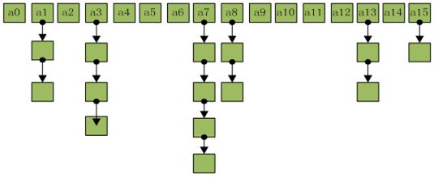
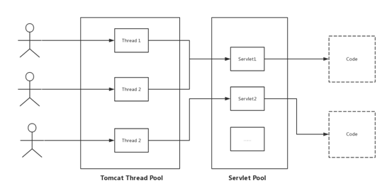
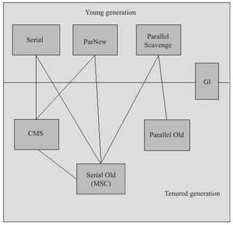
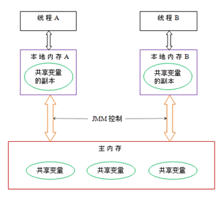
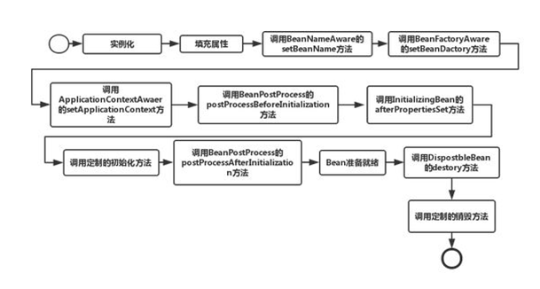
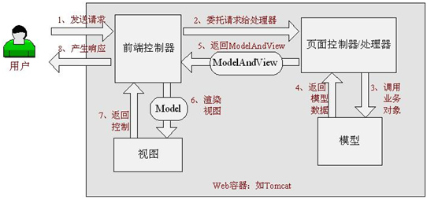

基础1、String 编码UTF-8 和GBK的区别?2、字节流与字符流的区别3、cookie和session的区别4、什么是Java序列化，如何实现Java序列化5、为什么String是不可变对象6、单例模式的几种写法7、web.xml 加载顺序8、Filter和Servlet的区别9、运行时异常与一般异常的区别10、重载Overload与重写Override的区别11、abstract类和interface的区别12、Comparable和Comparator区别13、Object类有哪些方法14、Java是属于静态语言还是动态语言15、static 关键字的作用16、NIO与IO的区别17、面向对象三大特征六大原则集合 1、ArrayList和Vector的区别2、HashMap和Hashtable的区别3、List和Map区别4、List、Map、Set三个接口，存取元素时，各有什么特点5、说出ArrayList、Vector、LinkedList的存储性能和特性6、HashMap底层7、HashMap存储结构8、HashMap的扩容机制为什么是2次幂9、解决Hash冲突的方法10、HashMap遍历方式11、HashMap、LinkedHashMap、TeeMap的区别12、Collection和Collections的区别13、ArrayList扩容机制14、ArrayList的sublist修改是否影响list本身线程、并发1、Java中有几种方法可以实现一个线程？2、线程的几种状态3、如何停止一个正在运行的线程？4、notify()和notifyAll()有什么区别？5、sleep()和 wait()有什么区别?6、Java如何实现多线程之间的通讯和协作7、什么是线程安全？线程安全是怎么完成的8、servlet是线程安全的吗9、同步有几种实现方法10、volatile有什么用？能否用一句话说明下volatile的应用场景？11、HashMap与ConcurrentHashMap的区别12、ConcurrentHashMap的实现原理13、Lock与synchronized 的区别14、什么是死锁15、什么是线程饿死，什么是活锁？16、Java中的队列都有哪些，有什么区别。17、什么是阻塞队列18、线程和进程的区别19、并发与并行的区别20、Runnable接口和Callable接口的区别21、阻塞非阻塞与同步异步的区别22、什么是ThreadLocal23、Servlet是线程安全的吗24、什么是原子操作25、什么是竞争条件？你怎样发现和解决竞争？26、数据竞争27、CyclicBarrier和CountDownLatch的区别28、什么是上下文切换29、自旋锁与互斥锁30、偏向锁31、重入锁是怎么计数的32、Executor, ExecutorService 和 Executors 区别JVM虚拟机1、Java内存区域划分2、heap和stack有什么区别3、JVM底层是如何实现synchronized的4、volatile的底层实现原理5、GC是什么？为什么要有GC？6、Minor GC ，Full GC 触发条件7、如何判断一个对象是否存活8、Java中垃圾收集算法都有哪些9、常见的垃圾收集器都有哪些10、垃圾回收机制的基本原理是什么11、Java内存模型12、Java类加载机制13、Java类加载过程14、类加载器双亲委派模型机制15、什么是类加载器，类加载器有哪些？数据库、MySQL1、什么是事务2、MySQL事务隔离级别3、脏读、不可重复读、幻读4、MySQL锁机制5、MySQL存储引擎6、MySQL Limit分页优化7、共享锁与排他锁8、乐观锁与悲观锁9、MySQL索引的数据结构，B+树和B树区别10、MySQL索引的类型11、MySql优化原则12、聚集索引、非聚集索引区别13、覆盖索引14、索引失效的情况15、数据库三范式16、union和unionall区别17、left join与right join区别算法与数据结构1、冒泡排序2、归并排序3、选择排序4、快速排序5、二分查找6、稳定排序和非稳定排序7、B+树与二叉树的区别设计模式Spring1、为什么要用Spring或者说Spring是如何简化Java开发的2、什么是IoC和DI3、介绍下AOP4、JDK动态代理与CGLIB代理5、Spring Bean的生命周期6、Spring常用注解7、BeanFactory和ApplicationContext有什么区别?8、Spring注解@Resource和@Autowired区别对比9、事务传播属性和隔离级别10、Spring 中用到的设计模式SpringMVC1、SpringMVC工作原理2、SpringMVC和Struts2区别Hibernate1、list和iterator的区别Linux1、linux下怎么查看文件内容？网络1、TCP UDP区别2、TCP三次握手3、为什么四次挥手4、TCP 协议如何保证可靠传输5、OSI七层模型6、HTTP1.0和HTTP1.1的区别7、HTTP中GET和POST的区别
UTF8是国际编码，它的通用性比较好
GBK是国家编码，通用性比UTF8差，不过UTF8占用的数据库比GBK大~
GBK的文字编码是双字节来表示的，即不论中、英文字符均使用双字节来表示，
UTF-8 英文使用8位（即一个字节），中文使用24为（三个字节）来编码。
InputStream 和OutputStream,两个是为字节流设计的,主要用来处理字节或二进制对象,
Reader和 Writer.两个是为字符流（一个字符占两个字节）设计的,主要用来处理字符或字符串.
实际上字节流在操作时本身不会用到缓冲区（内存），是文件本身直接操作的，而字符流在操作时使用了缓冲区，通过缓冲区再操作文件，
考虑到安全应当使用session
序列化就是一种用来处理对象流的机制，所谓对象流也就是将对象的内容进行流化。可以对流化后的对象进行读写操作，也可将流化后的对象传输于网络之间。
不可变对象是指在创建后其外部可见状态无法更改的对象，不可变对象可以提高String Pool的效率和安全性，不可变对象对于多线程是安全的。当然也有其他方面原因，但是Java把String设成immutable最大的原因应该是效率和安全。
http://wuchong.me/blog/2014/08/28/how-to-correctly-write-singleton-pattern/
context-param -> listener -> filter -> servlet
http://blog.csdn.net/itmyhome1990/article/details/6961018
filter是一个可以复用的代码片段，可以用来转换HTTP请求、响应和头信息。Filter不像Servlet，它不能直接对用户生成响应。
在Java中提供了两种错误的异常类，分别是Error和Exception，它们拥有相同的父类Throwable。Error表示程序在运行期间出现了非常严重的错误，该错误不可恢复，发生在JVM层次，将导致程序终止执行；而Exception表示可恢复的异常，可以被编译器捕捉，分为Checked Exception和Runtime Exception两大类。
Runtime Exception异常可以不处理，当出现这样的异常时，总是由虚拟机接管。常见的运行时异常有：NullPointerException、ClassCaseException、ArrayIndexOutOfBoundsException、ArrayStoreException、BufferOverflowException、ArithmeticException等
Checked Exception异常发生在程序的编译阶段，Java编译器强制程序去捕获该类异常，使用try..catch进行处理，比较常见的有IOException、SQLException
重载(Overload) 表示同一个类中可以有多个名称相同的方法，但这些方法的参数列表各不相同(参数类型、参数个数)，要注意的是返回值类型不可用作方法重载的区别根据
重写(Override) 表示子类中的方法可以与父类中的方法具有相同的名称和参数，但被子类覆写的方法不能拥有比父类方法更加严格的访问权限。
Comparable是一个排序接口，只包含一个函数:compareTo()
一个类实现了Comparable接口，就意味着该类本身支持排序，它可以直接通过Arrays.sort()或Collections.sort()进行排序。
Comparator是一个比较器接口，包含两个函数:compare()和equals()
一个类实现了Comparator接口，那么它就是一个比较器。其他的类，可以根据该比较器去排序
综上所述：Comparable是内部比较器，而Comparator是外部比较器。
一个类本身实现了Comparable比较器，就意味着它本身支持排序；若它本身没实现Comparable，也可以通过外部比较器Comparator进行排序
equals
hashCode
toString
notify
notifyAll
wait
finalize
getClass
clone
动态类型语言：指在运行期间才去做类型数据检查的语言，也就是说，在用动态类型的语言编程时，永远也不用给任何变量指定数据类型，该语言会在你第一次赋值给变量时，在内部将数据类型记录下来。
静态类型语言：静态类型语言与动态类型语言刚好相反，它的数据类型是在编译期间检查的，也就是说在写程序时要声明所有变量的数据类型。
综上所述，Java是属于静态语言，因为在编译阶段就要确定所有变量的数据类型。
https://www.cnblogs.com/greatfish/p/5981841.html
修饰属性和方法
静态代码块
静态内部类
静态导入
方法区中类静态属性引用的对象可作为 GC Roots的根节点
| IO | NIO |
|---|---|
| Stream oriented | Buffer oriented |
| Blocking IO | Non blocking IO |
| Selectors |
标准的IO基于字节流和字符流进行操作的，而NIO是基于通道（Channel）和缓冲区（Buffer）进行操作，数据总是从通道读取到缓冲区中，或者从缓冲区写入到通道中。
http://www.iteye.com/magazines/132-Java-NIO
三大特征：
(1)封装(Encapsulation)
(2)继承(Inheritance)
(3)多态(Polymorphism)
六大原则：
(1)单一职责原则（Single-Resposibility Principle）
(2)开放封闭原则（Open-Closed principle）
(3)里氏替换原则（Liskov-Substituion Principle）
(4)依赖倒置原则（Dependecy-Inversion Principle）
(5)ISP 接口隔离原则(Interface-Segregation Principle)
(6)迪米特法则或最少知识原则
https://blog.csdn.net/jiyiqinlovexx/article/details/46593053
https://www.cnblogs.com/itfenqing/p/7750524.html
1、ArrayList和Vector都实现了List接口，底层都是基于Java数组来存储集合元素
2、ArrayList使用transient修饰了elementData数组，而Vector则没有
3、Vector是ArrayList的线程安全版本
4、容量扩充 ArrayList为0.5倍+1，而Vector若指定了增长系数，则新的容量=”原始容量+增长系数”, 否则增长为原来的1倍
参考：http://blog.itmyhome.com/2017/07/java-arraylist-vector
相同点：
都是存储键值对(key-value)的散列表，通过table数组存储，数组的每一个元素都是一个Entry，而一个Entry就是一个单向链表，Entry链表中的每一个节点保存了key-value键值对数据
不同点：
1、继承和实现方式不同
2、线程安全不同
3、对null值处理不同
4、支持的遍历种类不同
5、容量的初始值和增加方式不同
6、添加key-value时的hash值算法不同
参考：http://blog.itmyhome.com/2017/08/hashmap-hashtable-difference
一个是存储单列数据的集合，另一个是存储键和值这样的双列数据的集合
List中存储的数据是有顺序的，并且允许重复，Map中存储的数据是没有顺序的，其键是不能重复的他的值是可以重复的。
Collection是最基本的集合接口，一个Collection代表一组Object，即Collection元素。一些Collection允许相同的元素而另一些不行，一些能排序而另一些不行。JDK中不提供此接口的任何直接实现，它提供更具体的子接口(如List、Set)。Map没有继承Collection接口，Map提供key到value的映射，不能包含相同的key
元素有放入顺序，元素可重复
List接口有三个实现类：LinkedList， ArrayList，Vector
LinkedList：底层基于链表实现，链表内存是散乱的，每一个元素存储本身内存地址的同时还存储下一个元素的地址。链表增删快，查找慢。
ArrayList和Vector的区别：ArrayList是非线程安全的,效率高；Vector是线程安全的，效率低
元素无放入顺序，元素不可重复
Set接口有两个实现类：HashSet(底层由HashMap实现)，LinkedHashSet
SortedSet接口有一个实现类：TreeSet(底层由平衡二叉树实现)
以键值对的方式出现的
Map接口有三个实现类：HashMap，Hashtable, LinkedHashMap
HashMap非线程安全，高效，支持null；
HashTable线程安全，低效，不支持null ；
SortedMap有一个实现类：TreeMap；
ArrayList和Vector都是使用数组方式存储数据，此数据元素大于实际存储的数据以便增加和插入元素，他们都运行直接按序号索引元素，但是插入元素要涉及数组元素移动等内存操作，所以索引数据快而插入数据慢
Vector由于使用了synchronized方法(线程安全) 通常性能上较ArrayList差
而LinkedList使用双向链表实现存储，按序号索引数据需要进行前后或后向遍历，但是插入数据时只需记录本项的前后项即可，所以插入速度较快
LinkedList也是线程不安全的，LinkedList提供了一些方法(get、remove、insert)，使得LinkedList可以被当作堆栈和队列来使用
HashMap采用"Hash算法"来决定每个元素的存储位置，当程序执行put方法时，系统将调用hashCode()方法得到其hashCode值，得到这个对象的hashCode值之后，系统会根据该hashCode值来决定该元素的存储位置
HashMap是采用数组加链表的存储方式来实现的。
put源码：
首先判断key是否为null，如果为null调用putForNullKey方法进行处理
调用hash()方法根据key计算Hash值
搜索指定hash值在对应table中的索引
根据源码可以看出，当程序试图将一个key-value对放入HashMap中时，首先根据key的hashCode()返回值决定该Entry的存储位置，如果返回值相同，那它们的存储位置相同；如果这两个Entry的key通过equals比较返回true，新添加Entry的value将覆盖集合中原有Entry的value
还调用了addEntry()方法，涉及到两个变量: size(初始容量)、threshold(负载因子)
get源码
当需要存储一个Entry对象时，会根据Hash算法来决定其存储位置；当需要取出一个Entry时，也会根据Hash算法找到其存储位置，直接取出该Entry。
HashMap采取数组加链表的存储方式来实现。亦即数组（散列桶）中的每一个元素都是链表，如下图：

HashMap中的数据接口是数组+单链表的组合，我们希望元素存放的更均匀，最理想的效果是，Entry数组中每个位置都只有一个元素，这样查询的时候效率最高，不需要遍历单链表，也不需要通过equals去比较k，而且空间利用率最大，时间复杂度最优。
static int indexFor(int h, int length) {
return h & (length-1);
}
通过&运算效率非常高，和二进制有关系
开放定址法
再哈希法
链地址法（HashMap采用的方法）
建立一个公共溢出区
在for-each中使用entrySet遍历
在for-each循环中遍历keys或values
使用Iterator遍历
通过key遍历value
http://blog.csdn.net/itmyhome1990/article/details/48013857
HashMap是一个最常用的Map，它根据键的hashCode值存储数据，根据键可以直接获取它的值，具有很快的访问速度，遍历时，取得数据的顺序是完全随机的。HashMap最多只允许一条记录的键为null，不支持线程的同步。
LinkedHashMap是HashMap的一个子类，保存了记录的插入顺序，在用Iterator遍历LinkedHashMap时，先得到的记录肯定是先插入的。
TreeMap实现SortMap接口，能够把它保存的记录根据键排序，默认是按键值的升序排序，也可以指定排序的比较器。
Collection是集合类的上级接口，继承与它的接口主要有Set和List
Collections是针对集合类的一个帮助类，提供一系列静态方法(addAll、binarySearch、copy、fill、reverse，sort)实现对各种集合的搜索、排序、线程安全化等操作
ArrayList的默认容量大小是10
JDK1.6 扩充为原来的1.5倍+1 int newCapacity = (oldCapacity * 3)/2 + 1;
JDK1.7 扩充为原来的1.5倍 int newCapacity = oldCapacity + (oldCapacity >> 1);
1.7利用位运算，效率上高于1.6
x
List<String> list1 = **new** ArrayList<String>();list1.add("a");list1.add("b");List<String> list2 = list1.subList(0, list1.size());list2.add("c");//修改list2，而影响到list1，输出结果为 a b cfor(String str : list1){ System.out.println(str);}
Runnable相比Thread的优势：
a、可以避免由于单继承带来的局限
b、可以实现资源共享
新建(new)
运行(runnable)
阻塞(blocked)
等待(waiting)
超时等待(time_waiting)
终止(terminated)
使用interrupt
notify表示当前的线程已经放弃对资源的占有，通知等待的线程来获得对资源的占有权。
但是只有线程能够从wait状态中回复，然后继续运行wait方面的语句。
notifyAll表示当前的线程已经放弃对资源的占有，通知所有的等待线程来wait方法后面的语句开始运行
sleep是Thread类的静态方法，sleep的作用是让线程休眠指定的时间，在时间到达时恢复，也就是说sleep将在时间到达后恢复线程执行。调用sleep不会释放对象锁。
wait是Object中的方法，也就是说可以对任意一个对象调用wait方法，调用wait方法将会将线程挂起直到使用notify方法才能重新唤醒。线程休眠的同时释放掉机锁
生产者和消费者模式，wait()、notify()方法
线程安全就是说多个线程访问同一代码，不会产生不确定的结果。编写线程安全的代码是依靠线程同步，线程安全一般都涉及到synchronized就是一段代码同时只能有一个线程来操作
不是。当Tomcat接收到Client的HTTP请求时，Tomcat从线程池中取出一个线程，之后找到该请求对应的Servlet对象并初始化，
调用service()方法，只有一个实例对象。如果在servlet中定义了实例变量或静态变量那么可能会发生线程安全问题
● wait() 使一个线程处于等待状态
● sleep()使一个正在运行的线程处于睡眠状态
● notify()唤醒一个处于等待状态的线程
● allnotify()唤醒所有处于等待状态的线程
一旦一个共享变量（类的成员变量、类的静态成员变量）被volatile修饰之后，那么就具备了两层语义：
应用场景：
状态标记量、double check(双重检查)
我们知道HashMap不是线程安全的，Hashtable是线程安全的，同步的，synchronized是针对整张Hash表的，即每次锁住 整张表让线程独占，ConcurrentHashMap允许多个修改操作并发进行，其关键在于使用了锁分离技术。它使用了多个锁来控制对hash表的不同部分进行的修改。
ConcurrentHashMap内部使用段(Segment)来表示这些不同的部分，每个段其实就是一个小的hash table，它们有自己的锁。只要多个修改操作发生在不同的段上，它们就可以并发进行。
ConcurrentHashMap是Java5中新增的一个线程安全的Map集合，可以用来代替Hashtable，它使用了锁分离技术
ConcurrentHashMap是线程安全的哈希表，它是通过“锁分段”来实现的。ConcurrentHashMap中包括了“Segment(锁分段)数组”，每个Segment就是一个哈希表，而且也是可重入的互斥锁。第一，Segment是哈希表 表现在，Segment包含了“HashEntry数组”，而“HashEntry数组”中的每一个HashEntry元素是一个单向链表。即Segment是通过链式哈希表。第二，Segment是可重入的互斥锁表现在，Segment继承于ReentrantLock，而ReentrantLock就是可重入的互斥锁。
对于ConcurrentHashMap的添加，删除操作，在操作开始前，线程都会获取Segment的互斥锁；操作完毕之后，才会释放。而对于读取操作，它是通过volatile去实现的，HashEntry数组是volatile类型的，而volatile能保证“即对一个volatile变量的读，总是能看到（任意线程）对这个volatile变量最后的写入”，即我们总能读到其它线程写入HashEntry之后的值。 以上这些方式，就是ConcurrentHashMap线程安全的实现原理。
ReentrantLock与synchronized有相同的并发性和内存语义。由于synchronized是在JVM层面实现的，因此系统可以监控锁的释放与否，而ReentrantLock使用代码实现的，系统无法自动释放锁，需要在代码中finally子句中显式释放锁lock.unlock();
在并发量比较小的情况下，使用synchronized是个不错的选择，但是在并发量比较高的情况下，其性能下降很严重，此时ReentrantLock是个不错的方案。
(使用synchronized获取锁的线程由于要等待IO或者其他原因被阻塞了，但是又没有释放锁，其他线程只能干巴巴的等待，而Lock可以只等待一定的时间或者能够响应中断)
---补充---
1）synchronized是Java的关键字，因此是Java的内置特性，是基于JVM层面实现的。而Lock是一个Java接口，是基于JDK层面实现的，通过这个接口可以实现同步访问；
2）采用synchronized方式不需要用户去手动释放锁，当synchronized方法或者synchronized代码块执行完之后，系统会自动让线程释放对锁的占用；而 Lock则必须要用户去手动释放锁，如果没有主动释放锁，就有可能导致死锁现象。
死锁就是两个或两个以上的线程被无限的阻塞，线程之间相互等待所需资源。这种情况可能发生在当两个线程尝试获取其它资源的锁，而每个线程又陷入无限等待其它资源锁的释放，除非一个用户进程被终止。就 JavaAPI 而言，线程死锁可能发生在以下情况。
线程饿死和活锁虽然不像是死锁一样的常见问题，但是对于并发编程的设计者来说就像一次邂逅一样。当所有线程阻塞，或者由于需要的资源无效而不能处理，不存在非阻塞线程使资源可用。JavaAPI 中线程活锁可能发生在以下情形：
阻塞队列与普通队列的区别在于，当队列是空的时，从队列中获取元素的操作将会被阻塞，或者当队列是满时，往队列里添加元素的操作会被阻塞。试图从空的阻塞队列中获取元素的线程将会被阻塞，直到其他的线程往空的队列插入新的元素。同样，试图往已满的阻塞队列中添加新元素的线程同样也会被阻塞，直到其他的线程使队列重新变得空闲起来，如从队列中移除一个或者多个元素，或者完全清空队列。
Queue接口与List、Set同一级别，都是继承了Collection接口。LinkedList实现了Queue接口。我们平时使用的一些常见队列都是非阻塞队列，比如PriorityQueue、LinkedList(LinkedList是双向链表，它实现了Dequeue接口)
ArrayBlockingQueue、LinkedBlockingQueue、PriorityBlockingQueue、DelayQueue
阻塞队列是一个支持两个附加操作的队列。这两个附加的操作支持阻塞的插入和移除方法。
支持阻塞的插入方法：意思是当队列满时，队列会阻塞插入元素的线程，直到队列不满。
支持阻塞的移除方法: 意思是在队列为空时，获取元素的线程会等待队列变为非空。
阻塞队列常用于生产者和消费者的场景,生产者是向队列里添加元素的线程，消费者是
从队列里取元素的线程。阻塞队列就是生产者用来存放元素、消费者用来获取元素的容器。
线程是进程的子集，一个进程可以有很多线程，每条线程并行执行不同的任务。不同的进程使用不同的内存空间，而所有的线程共享一片相同的内存空间。
并行是指两个或多个事件在同一时刻发生；而并行是指两个或多个事件在同一时间间隔发生(不一定同时，可能交替执行)
（举例介绍）
https://www.zhihu.com/question/19732473/answer/20851256
ThreadLocal叫做线程本地变量，也有叫线程局部变量。ThreadLocal提供了一种访问某个变量的特殊方式：访问到的变量属于当前线程，即保证每个线程的变量不一样，而同一个线程在任何地方拿到的变量都是一致的,这就是所谓的线程隔离
Servlet不是线程安全的
当Tomcat接收到Client的HTTP请求时，Tomcat从线程池中取出一个线程，之后找到该请求对应的Servlet对象并进行初始化，之后调用service()方法。要注意的是每一个Servlet对象在Tomcat容器中只有一个实例对象，即是单例模式。如果多个HTTP请求请求的是同一个Servlet，那么这两个HTTP请求对应的线程将并发调用Servlet的service()方法。

上图中的Thread1和Thread2调用了同一个Servlet1，所以此时如果Servlet1中定义了实例变量或静态变量，那么可能会发生线程安全问题（因为所有的线程都可能使用这些变量）。
原子（atom）本意是“不能被进一步分割的最小粒子”，而原子操作（atomic operation）意为"不可被中断的一个或一系列操作" 。
处理器如何实现原子操作：
32位IA-32处理器使用基于对缓存加锁或总线加锁的方式来实现多处理器之间的原子操作。
JAVA如何实现原子操作:
在java中可以通过锁和循环CAS的方式来实现原子操作。
在Java多线程中，当两个或以上的线程对同一个数据进行操作的时候，可能会产生“竞争条件”的现象。这种现象产生的根本原因是因为多个线程在对同一个数据进行操作，此时对该数据的操作是非“原子化”的，可能前一个线程对数据的操作还没有结束，后一个线程又开始对同样的数据开始进行操作，这就可能会造成数据结果的变化未知。
解决：
线程锁(synchroniezd, Lock)
线程同步
数据竞争是指，如果在访问共享的非final类型的域时没有采用同步来进行协同，那么就会出现数据竞争。当一个线程写入一个变量而另一个线程接下来读取这个变量，或者读取一个之前由另一个线程写入的变量时，并且在这两个线程之间没有使用同步，那么就可能出现数据竞争。在Java内存模型中，如果在代码中存在数据竞争，那么这段代码就没有确定的语义。
这两个的区别是CyclicBarrier可以重复使用已经通过的障碍，而CountdownLatch不能重复使用。
即使是单核CPU也支持多线程执行代码，CPU通过给每个线程分配CPU时间片来实现这个机制。时间片是CPU分配给各个线程的时间，因为时间片非常短，所以CPU通过不停地切换线程执行，让我们感觉多个线程时同时执行的，时间片一般是几十毫秒（ms）。
CPU通过时间片分配算法来循环执行任务，当前任务执行一个时间片后会切换到下一个任务。但是，在切换前会保存上一个任务的状态，以便下次切换回这个任务时，可以再次加载这个任务的状态，
从任务保存到再加载的过程就是一次上下文切换。
互斥锁得不到锁时，线程会进入休眠，这类同步机制都有一个共性就是一旦资源被占用都会产生任务切换，任务切换涉及很多东西（上下文切换等）这些都需要大量时间，因此开销很大。
自旋锁是当锁被其他线程占有时，获取锁的线程便会进入自旋，不断检测自旋锁的状态。一旦自旋锁被释放，线程便结束自旋，得到自旋锁的线程便可以执行临界区的代码。对于临界区的代码必须短小，否则其他线程会一直受到阻塞，这也是要求锁的持有时间尽量短的原因
https://bbs.pediy.com/thread-74502.htm
Java偏向锁是Java6引入的一项多线程优化，它通过消除资源无竞争情况下的同步原语，进一步提高了程序的运行性能。
偏向锁，顾名思义，它会偏向于第一个访问锁的线程，如果在接下来的运行过程中，该锁没有被其他的线程访问，则持有偏向锁的线程将永远不需要触发同步。如果在运行过程中，遇到了其他线程抢占锁，则持有偏向锁的线程会被挂起，JVM会尝试消除塔身上的偏向锁，将锁恢复到标准的轻量级锁
https://www.cnblogs.com/charlesblc/p/5994162.html
线程重复n次获取了锁，随后在第n次释放该锁后，其他线程能够获取到该锁。锁的最终释放要求锁对于获取进行计数自增，计数表示当前锁被重复获取的次数，而锁被释放时，计数自减，当计数等于0时表示锁已经成功释放。
这三者均是Excutor框架中的一部分。
Executor和ExecutorService这两个接口主要的区别是：ExecutorService接口继承了Executor接口，是Executor的子接口
第二个区别是：Executor 接口定义了 execute()方法用来接收一个Runnable接口的对象，而 ExecutorService 接口中的 submit()方法可以接受Runnable和Callable接口的对象。
第三个区别是：Executor 中的 execute() 方法不返回任何结果，而 ExecutorService 中的 submit()方法可以通过一个 Future 对象返回运算结果。
Executors 类提供工厂方法用来创建不同类型的线程池。比如: newSingleThreadExecutor() 创建一个只有一个线程的线程池，newFixedThreadPool(int numOfThreads)来创建固定线程数的线程池，newCachedThreadPool()可以根据需要创建新的线程，但如果已有线程是空闲的会重用已有线程。
http://www.importnew.com/24923.html
程序计数器：是一块较小的内存空间，它可以看作是当前线程所执行的字节码的行号指示器。
Java虚拟机栈：线程私有的，生命周期与线程相同，用于存储局部变量表、操作数栈、动态链接、方法出口等信息。
本地方法栈：和虚拟机栈类似，虚拟机栈执行Java方法，而本地栈执行Native方法
Java堆：线程共享，在虚拟机启动时创建，存放对象实例，几乎所有的对象实例都在这里分配内存，是垃圾收集器管理的主要区域。
方法区：线程共享，用于存储已被虚拟机加载的类信息、常量、静态变量等
运行时常量池：方法区的一部分
直接内存
Java的内存分为两类，一类是栈内存，一类是堆内存。栈内存是指程序进入一个方法时，会为这个方法单独分配一块私属存储空间，用于存储这个方法内部的存储变量，当这个方法结束时，分配给这个方法的栈会释放，这个栈中的变量也将随之释放。
堆是与栈作用不同的内存，一般用于存放不放在当前方法栈中的那些数据，例如，使用new创建的对象都放在堆里，所以，它不会随方法的结束而消失。方法中的局部变量使用final修饰后，放在堆中而不是栈中。
synchronized在JVM里的实现原理：JVM基于进入和退出Monitor对象来实现方法同步和代码块同步，但两者的实现细节不一样。代码块同步是使用monitorenter和monitorexit指令实现的，而方法同步是使用另外一种方式实现的，JVM规范里并没有详细说明。但，方法的同步同样可以使用这两个指令来实现。
monitorenter指令是在编译后插入到同步代码块的开始位置，而monitorexit是插入到方法结束处和异常处，JVM要保证每个monitorenter必须有对应的monitorexit与之配对。任何对象都有一个monitor与之关联，当且一个monitor被持有后，它将处于锁定状态。线程执行到monitorenter指令时，将会尝试获取对象所对应的monitor的所有权，即尝试获得对象的锁。
如果把加入volatile关键字的代码和未加入volatile关键字的代码都生成汇编代码，会发现加入volatile关键字的代码会多出一个lock前缀指令。
lock前缀指令实际相当于一个内存屏障，内存屏障提供了以下功能：
1、重排序时不能把后面的指令重排序到内存屏障之前的位置
2、使得本CPU的Cache写入内存
3、写入动作也会引起别的CPU或者别的内核无效化其Cache，相当于让新写入的值对别的线程可见。
-----------
当一个变量定义为volatile之后，它将具备两种特性，第一是保证此变量对所有线程的可见性。第二个语义是禁止指令重排序优化
GC是垃圾收集的意思，内存处理是编程人员容易出现问题的地方，忘记或者错误的内存回收会导致程序或系统的不稳定甚至崩溃，Java提供的GC功能可以自动监测对象是否超过作用域从而达到自动回收内存的目的，Java语言没有提供释放已分配内存的显示操作方法。
Minor GC触发条件：当Eden区满时，触发Minor GC。
Full GC触发条件：
（1）调用System.gc时，系统建议执行Full GC，但是不必然执行
（2）老年代空间不足
（3）方法区空间不足
（4）通过Minor GC后进入老年代的平均大小大于老年代的可用内存
（5）由Eden区、From Space区向To Space区复制时，对象大小大于To Space可用内存，则把该对象转存到老年代，且老年代的可用内存小于该对象大小
判断一个对象是否存活有两种方法：

虚拟机的垃圾收集主要采用“分代收集”算法，一般把Java堆分为新生代和老年代。
新生代的内存空间划分为一块较大的Eden空间和两块较小的Survivor空间，每次使用Eden和其中一块Survivor，当回收时，将Eden和Survivor中还存活着的对象一次性地复制到另外一块Survivor空间上，最后清理掉Eden和刚才用过的Survivor空间
对象的内存分配，往大方向讲，就是在堆上分配，对象主要分配在新生代的Eden区上，少数情况下也可能会直接分配在老年代中。大多数情况下，对象在新生代Eden区中分配，当Eden区没有足够空间进行分配时，虚拟机将发起一次MinorGC。
大对象和长期存活的对象直接进入老年代，新生代主要采用“复制算法”来回收内存。
参考：理解Java垃圾回收机制
Java内存区分为堆内存和栈内存，所有实例域、静态域和数组元素存储在堆内存中，堆内存在线程之间共享，局部变量，方法定义参数和异常处理器参数不会在线程之间共享，它们不会有内存可见性问题，也不受内存模型的影响。
Java线程之间的通信由java内存模型控制，JMM决定一个线程对共享变量的写入何时对另一个线程可见。从抽象的角度来看，JMM定义了线程和主内存之间的抽象关系，线程之间的共享变量存储在主内存中，每个线程都有一个私有的本地内存，本地内存中存储了该线程以读/写共享变量的副本。

从上图来看，线程A与线程B之间如要通信的话，必须要经历下面2个步骤：
1、首先，线程A把本地内存A中更新过的共享变量刷新到主内存中去。
2、然后，线程B到主内存中去读取线程A之前已更新过的共享变量。
参考：深入理解Java内存模型
虚拟机把描述类的数据从Class文件加载到内存，并对数据进行校验、转换解析和初始化，最终形成可以被虚拟机直接使用的Java类型，这就是虚拟机的类加载机制。
Java虚拟机中类加载的全过程，包括加载、验证、准备、解析和初始化这5个阶段
参考：Java虚拟机类加载机制
如果一个类加载器收到了类加载的请求，它首先不会自己去尝试加载这个类，而是把这个请求委派给父类加载器去完成，每一个层次的类加载器都是如此，因此所有的加载请求最终都应该传送到顶层的启动类加载器中，只有当父加载器反馈自己无法完成这个加载请求时，子加载器才会尝试自己去加载。
通过一个类的全限定名来获取描述类的二进制字节流，以便让应用程序自己决定如何去获取所需要的类。实现这个动作的代码模块称为”类加载器”
主要有以下四种类加载器：
1、启动类加载器(Bootstrap ClassLoader)
2、扩展类加载器
3、系统类加载器
4、用户自定义类加载器
事务一般是指要做的或所做的事情，各种数据项的一个程序执行单元。
一个数据库事务通常包含对数据库进行读或写的一个操作序列。它的存在包含有以下两个目的：
1、为数据库操作提供了一个从失败中恢复到正常状态的方法，同时提供了数据库即使在异常状态下仍能保持一致性的方法。
2、当多个应用程序在并发访问数据库时，可以在这些应用程序之间提供一个隔离方法，以防止彼此的操作互相干扰。
当一个事务被提交给了DBMS（数据库管理系统），则DBMS需要确保该事务中的所有操作都成功完成且其结果被永久保存在数据库中，如果事务中有的操作没有成功完成，则事务中的所有操作都需要被回滚，回到事务执行前的状态（要么全执行，要么全都不执行）;同时，该事务对数据库或者其他事务的执行无影响，所有的事务都好像在独立的运行。
事务应该具有4个属性：原子性、一致性、隔离性、持久性。这四个属性通常称为ACID特性。
原子性（Atomicity）：事务作为一个整体被执行，包含在其中的对数据库的操作要么全部被执行，要么都不执行。
一致性（Consistency）：事务应确保数据库的状态从一个一致状态转变为另一个一致状态。一致状态的含义是数据库中的数据应满足完整性约束。
隔离性（Isolation）：多个事务并发执行时，一个事务的执行不应影响其他事务的执行。
持久性（Durability）：一个事务一旦提交，他对数据库的修改应该永久保存在数据库中。
http://www.hollischuang.com/archives/898
| 隔离级别 | 脏读 | 不可重复读 | 幻读 |
|---|---|---|---|
| 读未提交(Read uncommitted) | √ | √ | √ |
| 读已提交(Read committed) | x | √ | √ |
| 可重复读(Repeatable read) | x | x | √ |
| 可串行化(Serializable) | x | x | x |
脏读: 脏读就是指当一个事务正在访问数据，并且对数据进行了修改，而这种修改还没有提交到数据库中，这时，另外一个事务也访问这个数据，然后使用了这个数据。
不可重复读: 是指在一个事务内，多次读同一数据。在这个事务还没有结束时，另外一个事务也访问该同一数据。那么，在第一个事务中的两次读数据之间，由于第二个事务的修改，那么第一个事务两次读到的的数据可能是不一样的。这样就发生了在一个事务内两次读到的数据是不一样的，因此称为是不可重复读。
幻读: 第一个事务对一个表中的数据进行了修改，这种修改涉及到表中的全部数据行。同时，第二个事务也修改这个表中的数据，这种修改是向表中插入一行新数据。那么，以后就会发生操作第一个事务的用户发现表中还有没有修改的数据行，就好象发生了幻觉一样。
http://www.cnblogs.com/zhoujinyi/p/3437475.html
MySQL有三种锁的级别：页级、表级、行级
MyISAM和MEMORY存储引擎采用的表级锁；InnoDB存储引擎既支持行级锁，也支持表级锁，但默认情况下是采用行级锁。
MyISAM
它不支持事务，也不支持外键，访问速度快，对事务完整性没有要求或者以SElECT INSERT为主的应用基本都可以使用这个引擎来创建表。
InnoDB
InnoDB存储引擎提供了具有提交，回滚和崩溃恢复能力的事务安全。但是对比MyISAM的存储引擎InnoDB写的处理效率差一些并且会占用更多的磁盘空间以保留数据和索引
MEMORY
如名字所指明的，MEMORY表存储在内存中，且默认使用哈希索引。这使得它们非常快，并且对创建临时表非常有用。可是，当服务器关闭之时，所有存储在MEMORY表里的数据丢失。
索引、子查询、表连接
http://blog.itmyhome.com/2017/06/mysql-share-lock
http://blog.itmyhome.com/2017/06/mysql-optimistic-lock-and-pessimistic-lock
存储的位置不同：B+树中的数据都存储在叶子结点上，也就是其所有叶子结点的数据组合起来就是完整的数据，但是B树的数据存储在每一个结点中，并不仅仅存储在叶子结点上
normal: 表示普通索引
unique: 表示唯一索引，不允许重复的索引
full text；表示全文搜索的索引
B树索引、全文索引、哈希索引
查询指定字段
避免在列上做运算，这样导致索引失效
limit基数比较大时用between
http://www.cnblogs.com/rin9958/articles/5528666.html
http://www.cnblogs.com/ziyiFly/archive/2008/12/24/1361380.html
聚集索引：数据行的物理顺序与列值的逻辑顺序相同，一个表中只能有一个聚集索引。
非聚集索引：该索引中索引的逻辑顺序与磁盘上行的物理存储顺序不同，一个表中可以有多个非聚集索引。
https://www.cnblogs.com/s-b-b/p/8334593.html
覆盖索引是指索引的叶子节点已包含所有要查询的列，因此不需要访问表数据，能极大地提高性能
1、like查询以%开头
2、在列上做运算
3、条件中用or
4、如果列类型是字符串，那一定要在条件中将数据使用引号引用起来,否则不使用索引
第一范式：确保每列的原子性
第二范式：确保表中的每列都和主键相关
第三范式：确保每列都和主键直接相关，而不是间接相关
Union，对两个结果集进行并集操作，不包括重复行，同时进行默认规则的排序
Union All，对两个结果集进行并集操作，包括重复行，不进行排序
Left join：将左侧数据全部返回，右侧相符的数据返回，不符合的部分则返回NULL值Right join：将右侧数据全部返回，左侧相符的数据返回，不符合的部分则返回NULL值
xxxxxxxxxxpublic class BubbleSort { public static void main(String[] args) { // TODO Auto-generated method stub int temp[] = {13,52,3,5,16,29}; //执行temp.length次 for(int i=0;i<temp.length;i++){ for(int j=0;j<temp.length-i-1;j++){ if(temp[j] > temp[j+1]){ //前一个数和后一个数比较 int a = temp[j]; temp[j] = temp[j+1]; temp[j+1] = a; } } } for(int i=0;i<temp.length;i++){ System.out.print(temp[i] + " "); } }}
归并排序（Merge）是将两个（或两个以上）有序表合并成一个新的有序表，即把待排序序列分为若干个子序列，每个子序列是有序的。然后再把有序子序列合并为整体有序序列。
归并排序是建立在归并操作上的一种有效的排序算法。该算法是采用分治法（Divide and Conquer）的一个非常典型的应用。 将已有序的子序列合并，得到完全有序的序列；即先使每个子序列有序，再使子序列段间有序。若将两个有序表合并成一个有序表，称为2-路归并。
x
public class Test { public static void main(String[] args) { // TODO Auto-generated method stub int[] data = new int[] { 5,8,1,6,2,8,9,1,3 }; sort(data,0,data.length-1); for(int i=0;i<data.length;i++){ System.out.print(data[i] + " "); } } /** * * @param a 待排序数组 * @param low 第一个元素的索引 * @param high 最后一个元素的索引 * @return */ public static int[] sort(int[] a,int low,int high){ int mid = (low+high)/2; if(low<high){ sort(a,low,mid); sort(a,mid+1,high); //左右归并 merge(a,low,mid,high); } return a; } public static void merge(int[] a, int low, int mid, int high) { int[] temp = new int[high-low+1]; int i= low; int j = mid+1; int k=0; // 把较小的数先移到新数组中 while(i<=mid && j<=high){ if(a[i]<a[j]){ temp[k++] = a[i++]; }else{ temp[k++] = a[j++]; } } // 把左边剩余的数移入数组 while(i<=mid){ temp[k++] = a[i++]; } // 把右边边剩余的数移入数组 while(j<=high){ temp[k++] = a[j++]; } // 把新数组中的数覆盖nums数组 for(int x=0;x<temp.length;x++){ a[x+low] = temp[x]; } }}https://www.cnblogs.com/of-fanruice/p/7678801.html
原理：首先在未排序列中找到最小元素，存放到排序序列的起始位置，然后，再从剩余未排序元素中继续寻找最小元素，然后放到已排序序列的末尾。依次类推，直到所有元素均排序完毕。
xxxxxxxxxxpublic class SelectSort { /* * 选择排序 * 参数说明： * a -- 待排序的数组 * n -- 数组的长度 */ public static void selectSort(int[] a, int n) { int i; // 有序区的末尾位置 int j; // 无序区的起始位置 int min; // 无序区中最小元素位置 for(i=0; i<n; i++) { min=i; // 找出"a[i+1] ... a[n]"之间的最小元素，并赋值给min。 for(j=i+1; j<n; j++) { if(a[j] < a[min]) min=j; } // 若min!=i，则交换 a[i] 和 a[min]。 // 交换之后，保证了a[0] ... a[i] 之间的元素是有序的。 if(min != i) { int tmp = a[i]; a[i] = a[min]; a[min] = tmp; } } } public static void main(String[] args) { int[] a = {20,40,30,99,10,60,50}; selectSort(a, a.length); for (int i=0; i<a.length; i++){ System.out.print(a[i] + " "); } }}
所谓的快速排序的思想就是，通过一趟排序将要排序的数据分割成独立的两部分，其中一部分的所有数据都比另外一部分的所有数据都要小，然后再按此方法对这两部分数据分别进行快速排序，整个排序过程可以递归进行，以此达到整个数据变成有序序列。
首先把数组的第一个数拿出来作为一个key,在前后分别设置一个i,j作为标识，然后拿这个数组从后面往前遍历， 及j- -,直到找到第一个小于这个key的那个数然后交换这两个值，交换完成后，我们拿着这个key要从i往后遍历了，及i++ 一直循环到i=j结束，
当结束后，我们会发现大于这个key的值都会跑到这个key的后面，小于这个key的值就会跑到这个值的前面,然后我们对这个分段的数组再进行 递归调用就可以完成这个数组的排序。
x
public class FastSort { public static void main(String[] args) { int[] a = { 12, 20, 5, 16, 15, 1, 30, 45, 23, 9 }; int start = 0; int end = a.length - 1; sort(a, start, end); for (int i = 0; i < a.length; i++) { System.out.print(a[i] + " "); } } public static void sort(int[] a, int low, int high) { int start = low; int end = high; int key = a[low]; while (end > start) { // 从后往前比较 while (end > start && a[end] >= key) // 如果没有比关键值小的，比较下一个，直到有比关键值小的交换位置，然后又从前往后比较 end--; if (a[end] <= key) { int temp = a[end]; a[end] = a[start]; a[start] = temp; } // 从前往后比较 while (end > start && a[start] <= key) // 如果没有比关键值大的，比较下一个，直到有比关键值大的交换位置 start++; if (a[start] >= key) { int temp = a[start]; a[start] = a[end]; a[end] = temp; } // 此时第一次循环比较结束，关键值的位置已经确定了。左边的值都比关键值小，右边的值都比关键值大， 但是两边的顺序还有可能是不一样的，进行下面的递归调用 } // 递归 if (start > low) sort(a, low, start - 1);// 左边序列。第一个索引位置到关键值索引-1 if (end < high) sort(a, end + 1, high);// 右边序列。从关键值索引+1到最后一个 }}
算法思想：又叫折半查找，要求待查找的序列有序。每次取中间位置的值与待查关键字比较，如果中间位置的值比待查关键字大，则在前半部分循环这个查找的过程，如果中间位置的值比待查关键字小，则在后半部分循环这个查找的过程。直到查找到了为止，否则序列中没有待查的关键字。
xxxxxxxxxxpublic class BinarySearch { // 二分查找递归实现 public static int binSearch(int srcArray[], int start, int end, int key) { int mid = (end - start) / 2 + start; if (srcArray[mid] == key) { return mid; } if (start >= end) { return -1; } else if (key > srcArray[mid]) { return binSearch(srcArray, mid + 1, end, key); } else if (key < srcArray[mid]) { return binSearch(srcArray, start, mid - 1, key); } return -1; } public static void main(String[] args) { int srcArray[] = { 3, 5, 11, 17, 21, 23, 28, 30, 32, 50 }; System.out.println(binSearch(srcArray, 0, srcArray.length - 1, 11)); }}
稳定排序算法：冒泡排序、插入排序、归并排序、基数排序
非稳定排序算法：选择排序、快速排序、希尔排序、堆排序
http://www.cnblogs.com/codingmylife/archive/2012/10/21/2732980.html
https://mp.weixin.qq.com/s/h7FN25opqpuclRX9j0DkYg
待补充
待补充
1、基于POJO的轻量级和最小侵入性编程；
2、通过依赖注入和面向接口实现松耦合；
3、基于切面和惯例进行声明式编程；
4、通过切面和模板减少样板式代码。
IoC就是所谓控制反转，由之前我们用程序完成对象的创建和管理交给容器来实现，这就是控制权的反转，责任的反转，如果合作对象的引用或依赖关系的管理由具体对象来完成，会导致代码的高度耦合和可测试性的降低，这对复杂的面向对象系统的设计是非常不好的。
还有一个概念DI（依赖注入）其实就是IoC的另外一种说法，注入方式有接口注入、setter注入、构造器注入
AOP作为面向对象编程的一种补充，广泛应用于处理一些具有横切性质的系统级服务，如事务管理、安全检查、缓存、对象池管理等。AOP 实现的关键就在于 AOP 框架自动创建的 AOP 代理，AOP 代理则可分为静态代理和动态代理两大类，其中静态代理是指使用 AOP 框架提供的命令进行编译，从而在编译阶段就可生成 AOP 代理类，因此也称为编译时增强；而动态代理则在运行时借助于 JDK 动态代理、CGLIB 等在内存中“临时”生成 AOP 动态代理类，因此也被称为运行时增强。
https://www.ibm.com/developerworks/cn/java/j-lo-springaopcglib/index.html
JDK动态代理是基于接口的
CGLIB底层使用ASM(Java字节码处理框架)在内存中动态的生成被代理类的子类，使用CGLIB即使被代理类没有实现任何接口也可以实现动态代理功能，但不能是final的

在调用Bean的初始化方法之前，会调用一系列的aware接口实现，把相关的BeanName、BeanClassLoader,以及BeanFactory注入到Bean中去。接着会看到对invokeInitMethods的调用，这时还会看到启动afterPropertiesSet的过程
@Component
是所有收Spring管理组件的通用形式，@Component注解可以放在类的头上，不推荐使用。
@Controller
对应表现层的Bean，也就是Action
@Service
对应的是业务层Bean
@Repository
对应数据访问层Bean
@Resource和@Autowired
都是做bean的注入时使用
@RequestMapping
是一个用来处理请求地址映射的注解，可用于类或方法上
BeanFactory是IoC容器的核心接口，Spring使用BeanFactory来实例化、配置和管理Bean。它定义了IoC的基本功能，主要定义了getBean方法。getBean方法是IoC容器获取bean对象和引发依赖注入的起点。方法的功能是返回特定的名称的Bean
ApplicationContext由BeanFactory派生而来，提供了更多面向实际应用的功能。BeanFactory接口提供了配置框架及基本功能，但是无法支持spring的aop功能和web应用。而ApplicationContext接口作为BeanFactory的派生，因为提供BeanFactory所有的功能。而且ApplicationContext还在功能上做了扩展，相较于BeanFactorty，ApplicationContext还提供了以下的功能：
（1）MessageSource, 提供国际化的消息访问
（2）资源访问，如URL和文件
（3）事件传播特性，即支持aop特性
（4）载入多个（有继承关系）上下文 ，使得每一个上下文都专注于一个特定的层次，比如应用的web层
ApplicationContext：是IOC容器另一个重要接口， 它继承了BeanFactory的基本功能， 同时也继承了容器的高级功能，如：MessageSource（国际化资源接口）、ResourceLoader（资源加载接口）、ApplicationEventPublisher（应用事件发布接口）等。
链接：https://www.cnblogs.com/xiaoxi/p/5846416.html
@Resource(这个注解属于J2EE)的，默认按照名称进行装配。
Spring在TransactionDefinition接口中规定了7种类型的事务传播行为， 它们规定了事务方法和事务方法发生嵌套调用时事务如何进行传播：
| 事务传播行为类型 | 说明 |
|---|---|
| PROPAGATION_REQUIRED | 如果当前没有事务，就新建一个事务，如果已经存在一个事务中，加入到这个事务中，这是最常见的选择 |
| PROPAGATION_SUPPORTS | 支持当前事务，如果当前没有事务，就以非事务方式执行 |
| PROPAGATION_MANDATORY | 使用当前的事务，如果当前没有事务，就抛出异常 |
| PROPAGATION_REQUIRES_NEW | 新建事务，如果当前存在事务，把当前事务挂起 |
| PROPAGATION_NOT_SUPPORTED | 以非事务方式执行操作，如果当前存在事务，则抛出异常 |
| PROPAGATION_NEVER | 以非事务方式执行，如果当前存在事务，则抛出异常 |
| PROPAGATION_NESTED | 如果当前存在事务，则在嵌套事务内执行。如果当前没有事务，则执行与PROPAGATION_REQUIRED类似的操作 |
在Spring中定义了四种不同的事务隔离级别：
| 事务隔离级别 | 说明 |
|---|---|
| read_uncommitted | 读未提交，一个事务可以操作另外一个未提交的事务，不能避免脏读，不可重复读，幻读，隔离级别最低，并发性能最高 |
| read_committed | 读已提交，一个事务不可以操作另外一个未提交的事务，能防止脏读，不能避免不可重复读，幻读 |
| repeatable_read | 能够避免脏读，不可重复读，不能避免幻读 |
| serializable | 隔离级别最高，消耗资源最低，代价最高，能够防止脏读，不可重复读，幻读 |

1、客户端请求提交到DispatcherServlet
2、由DispatcherServlet控制器查询一个或多个HandlerMapping，找到处理请求的Controller
3、DispatcherServlet将请求提交到Controller
4、Controller调用业务逻辑处理后，返回ModelAndView
5、DispatcherServlet查询一个或多个ViewResoler视图解析器，找到ModelAndView指定的视图
6、视图负责将结果显示到客户端DispatcherServlet是整个Spring MVC的核心。它负责接收HTTP请求组织协调Spring MVC的各个组成部分。
其主要工作有以下三项：
http://jinnianshilongnian.iteye.com/blog/1594806
1、SpringMVC的入口是servlet，而Struts2是filter
2、Struts2是类级别的拦截，一个类对应一个request上下文，SpringMVC是方法级别的拦截，一个方法对应一个request上下文
3、拦截器实现机制上，Struts2有自己的interceptor机制，SpringMVC用的是独立的AOP方式，这样导致Struts2的配置文件量比SpringMVC大
4、SpringMVC集成了Ajax，只需一个注解@ResponseBody就可以实现，然后直接返回响应文本即可相比Struts2方便
5、SpringMVC和Spring无缝对接，项目的管理和安全上也比Struts2高。
6、设计思想上，Struts2更加符合OOP的编程思想
7、SpringMVC开发效率和性能高于Struts2
8、SpringMVC可以认为已经零配置
list查询，一次性把所有的记录都查询出来，输出一条语句
iterator会产生N+1问题，先把ID都取出来，然后根据ID查询数据库。
list只查询一级缓存，而iterator会从二级缓存中查
https://blog.csdn.net/hanxiaoshuang123/article/details/7103414
cat 由第一行开始显示档案内容
tac 从最后一行开始显示，可以看出 tac 是 cat 的倒着写！
more 一页一页的显示档案内容
less 与 more 类似，但是比 more 更好的是，他可以往前翻页！
head 只看头几行
tail 只看尾巴几行
nl 显示的时候，顺道输出 行号！
od 以二进制的方式读取档案内容！
TCP(传输控制协议)是面向连接的协议，也就是说，在收发数据前，必须和对方建立可靠的连接。一个TCP连接必须要经过三次"对话"才能建立起来。
UDP(用户数据报协议)是一个非连接的协议，传输数据之前源端和终端不建立连接
区别：
1、基于连接和无连接
2、对系统资源的要求(TCP较多，UDP少)
3、UDP程序结构简单
4、流模式与数据报模式
5、TCP保证数据正确性，UDP可能丢包，TCP保证数据顺序，UDP不保证。
http://www.cnblogs.com/bizhu/archive/2012/05/12/2497493.html
第一次握手：建立连接时，客户端发送syn包(syn=j)到服务器，并进入SYN_SEND状态，等待服务器确认；
第二次握手：服务器收到syn包，必须确认客户的SYN（ack=j+1），同时自己也发送一个SYN包（syn=k），即SYN+ACK包，此时服务器 进入SYN_RECV状态；
第三次握手：客户端收到服务器的SYN＋ACK包，向服务器发送确认包ACK(ack=k+1)，此包发送完毕，客户端和服务器进入 ESTABLISHED状态，完成三次握手。
通过这样的三次握手，客户端与服务端建立起可靠的双工的连接，开始传送数据。
http://www.cnblogs.com/yuilin/archive/2012/11/05/2755298.html
http://blog.csdn.net/xulu_258/article/details/51146489
主要是因为握手的ACK和SYN是合并在一条发送的，而挥手的ACK和FIN是分开发送的，所以挥手比握手多了一次。
http://blog.csdn.net/china_jeffery/article/details/79548412
TCP通过检验和、序列号、确认应答、重发控制、连接管路以及窗口控制等机制实现
可靠性传输
https://www.cnblogs.com/deliver/p/5471231.html
| OSI七层网络模型 | TCP/IP四层概念模型 | 对应网络协议 |
| 应用层(Application) | 应用层 | HTTP、TFTP、FTP、NFS、WAIS、SMTP |
| 表示层(Presentation) | Telnet、Rlogin、SNMP、Gopher | |
| 会话层(Session) | SMTP、DNS | |
| 传输层(Transport) | 传输层 | TCP、UDP |
| 网络层(Network) | 网络层 | IP、ICMP、ARP、RARP、AKP、UUCP |
| 数据链路层(Data Link) | 数据链路层 | FDDI、Ethernet、Arpanet、PDN、SLIP、PPP |
| 物理层(Physical) | IEEE 802.1A、IEEE 802.2到IEEE 802.11 |
HTTP1.1支持长连接和请求的流水线处理
在HTTP1.0中每一个命令和应答都会触发一次TCP连接的建立和断开。而从HTTP1.1开始，允许在一个TCP连接上发送多个命令和应答。
HTTP协议中定义了最基本的四种方法，分别是GET，POST，PUT，DELETE。对应着查，改，增，删4个操作。
GET用于信息获取，而且是安全的(不做信息修改)。
POST是向服务器发送请求数据
GET请求的数据会附在URL之后，以？分割URL和传输数据，参数之间以&相连。
GET方式提交的数据最多只能是1024字节，理论上POST没有限制
POST的安全性要比GET的安全性高，这里的安全是指，通过GET提交数据，用户名和密码将明文出现在URL上，有可能被浏览器缓存。